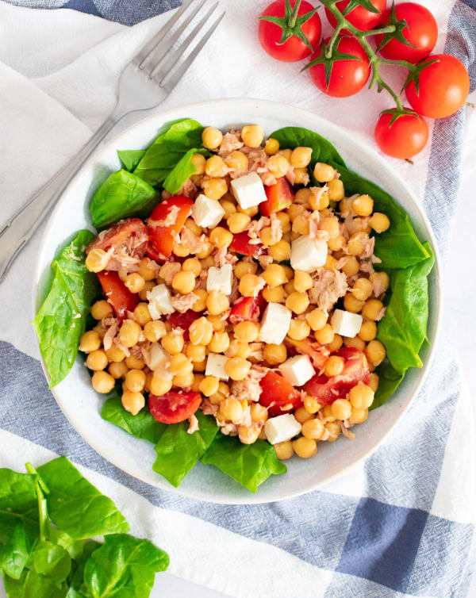

Volver a la primera pàgina
Primer plato
Índice de contenidos
Ingredientes
Paso a Paso
- La preparación de esta ensalada de garbanzos no podría ser más sencilla ya que utilizamos garbanzos de bote y atún en conserva. Lo primero que haremos para preparar esta ensalada de garbanzos será abrir el bote garbanzos y ponerlos en un escurridor para eliminar el líquido de la conserva. Los enjuagamos con abundante agua fría, los escurrimos bien y reservamos. Lavamos muy bien el pimiento rojo y verde.
 Fotografia:Primer Paso
Fotografia:Primer Paso
- A continuación, picamos en cuadraditos muy pequeños el pimiento rojo y verde y la cebolla. Abrimos la lata de atún y lo escurrimos bien de aceite.
 Fotografia:Segundo paso
Fotografia:Segundo paso
- En un bol amplio colocamos los garbanzos bien escurridos y añadimos la cebolla, el pimiento rojo y verde y removemos el conjunto con cuidado para no romper los garbanzos.
 Fotografia:Paso 3
Fotografia:Paso 3
- A continuación, añadimos el atún desmigándolo con los dedos. Añadimos la sal, el vinagre y el aceite de oliva virgen extra. Mezclamos todo el conjunto para que se integren bien los sabores y metemos la ensalada en la nevera hasta el momento de servir para que esté bien fresquita.
 Fotografia: Paso 4
Fotografia: Paso 4
- Y hasta aqui este primer plato de Garbanzos con atun, espero que disfruteis este plato saludable y super nutritivo
Resultado final

Fotografia: Ensalada de garbanzos